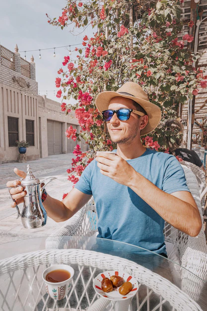

The mountains rose majestically on either side, their peaks touching the sky. The hills were clothed in lush greenery, with trees swaying gently in the breeze. The river's clear waters sparkled like diamonds under the warm sun. As I paddled downstream, the sound of rushing water was my constant.
Open Book
Feed
Friends
Event
Watch Videos
Photos
Stories


Recent Posts
465
56
I am Antik Mahmud. I literally started from drawing random cartoon on my notebook and after taking all those small steps, now I am a proud owner of an animation studio named Antik Animation Studio. Loving the experience of all the ups and downs I'm facing.
167
13
Fundamental areas of computer science Computer science is the study of computation, information, and automation. Computer science spans theoretical disciplines to applied disciplines. Though more often considered an academic discipline, computer science is closely related to computer.
203
08
How would you describe studying abroad? Strictly defined, study abroad is when a student pursues their academic goals in a foreign country. But it's so much more than that. Studying overseas opens the door to an entirely new world and new points of view that foster cross-cultural learning.
Friends
View More
Notifications
Abrar Khan liked your post
Rahee commented on your post
Humaira sent a friend request
Michael Jackson sent a message
View More
Melissa Ichita
953
23